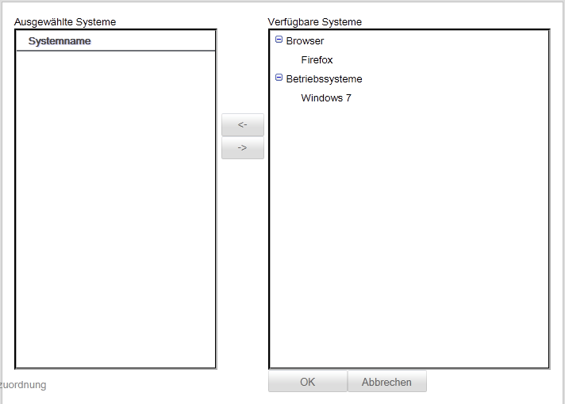
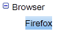
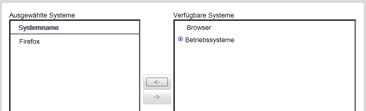
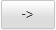
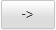
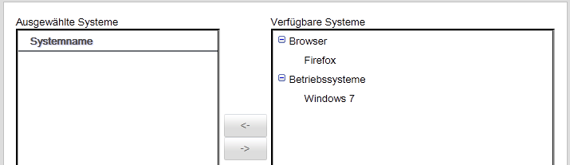

Systeme zum Projekt hinzufügen
Um Systeme einem Projekt hinzufügen zu können, müssen Systeme in der Anwendung hinterlegt sein. Sollten keine Systeme hinterlegt sein, so können diese in der Systemverwaltung organisiert werden (siehe dazu Systeme verwalten).

System- bzw. Systemgruppe dem Projekt hinzufügen
Um ein System oder eine ganze Systemgruppe dem Projekt hinzuzufügen, wählen Sie das entsprechende System oder die Systemgruppe  aus und klicken Sie dann auf  . Das System/Systemgruppe erscheint dann unter den ausgewählten Systemen für das Projekt.
. Das System/Systemgruppe erscheint dann unter den ausgewählten Systemen für das Projekt.

System- bzw. Systemgruppe aus dem Projekt entfernen
Um ein System oder eine ganze Systemgruppe aus dem Projekt zu entfernen, wählen Sie das entsprechende System oder die Systemgruppe  aus und klicken Sie dann auf . Das System bzw. die Systemgruppe wird dann aus den ausgewählten Systemen für das Projekt entfernt und erscheint wieder unter den verfügbaren Systemen.
aus und klicken Sie dann auf . Das System bzw. die Systemgruppe wird dann aus den ausgewählten Systemen für das Projekt entfernt und erscheint wieder unter den verfügbaren Systemen.

Wenn ein System sich nicht aus dem Projekt entfernen lässt, liegt das daran, dass das System noch mindestens einem Ticket zugeordnet ist. Ein System kann nur entfernt werden, wenn es von keinem Ticket im Projekt referenziert wird.
TODO Bug501
TODO Tickets wieder anlegen können
Änderungen übernehmen
Um die Änderungen zu speichern, klicken Sie auf . Sie gelangen anschließend wieder zur "Projekt bearbeiten Maske".
Änderungen verwerfen
Um die gemachten Änderungen zu verwerfen klicken Sie auf  . Weitere Informationen zum Verwerfen von Änderungen finden Sie hier.
. Weitere Informationen zum Verwerfen von Änderungen finden Sie hier.
Created with the Personal Edition of HelpNDoc: Free PDF documentation generator